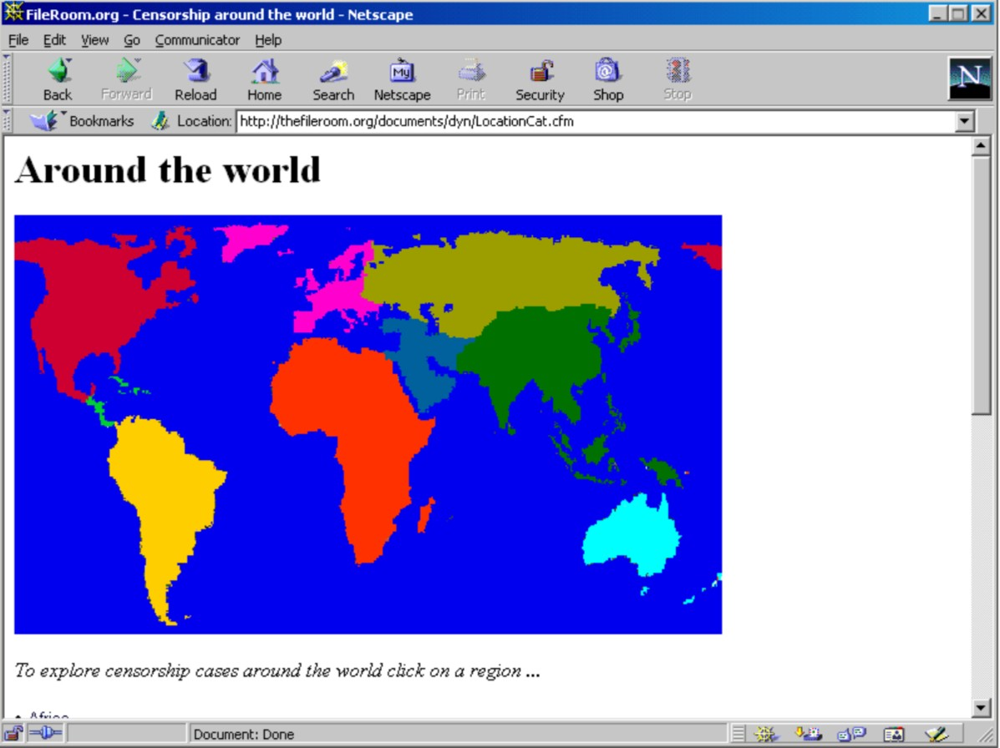
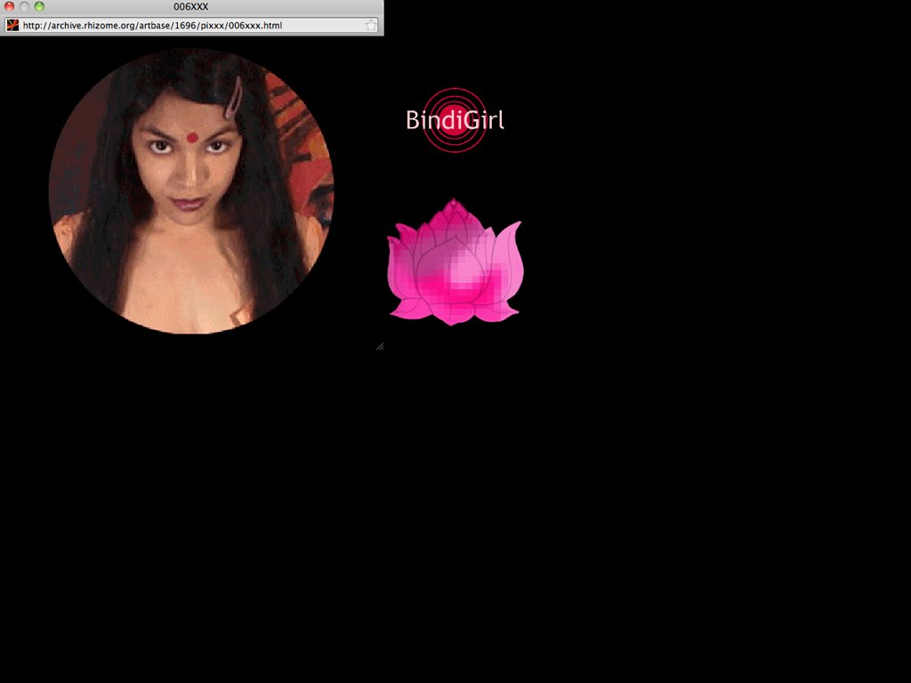

https://artbase.rhizome.org/wiki/Q3189

https://artbase.rhizome.org/wiki/Q3933
https://artbase.rhizome.org/wiki/Q15225
https://artbase.rhizome.org/wiki/Q4304

https://artbase.rhizome.org/wiki/Q16154
| Web Artist | Characteristics | Thumbnail Image |
|---|---|---|
| Molissa Fenley | Explores these sources of inspiration in concert with a detailed examination of a suite of movements (Rhizome Artbase) | https://artbase.rhizome.org/wiki/Q3189 |
| Olia Lialina | Story that unfolds by clicking on images and texts in various sized windows within the frame (Rhizome Artbase) | https://artbase.rhizome.org/wiki/Q3933 |
| Antoni Muntadas | Extensive, collaboratively compiled archive of worldwide culture censorship cases (Rhizome Artbase) |  https://artbase.rhizome.org/wiki/Q15225 |
| Prema Murthy | Combines new media with performance and the material arts (Rhizome Artbase) |  https://artbase.rhizome.org/wiki/Q4304 |
Auriea Harvey | Incorporates elaborate GIFs, shockwave animations, Java, and custom HTML (Rhizome Artbase) | https://artbase.rhizome.org/wiki/Q16154 |